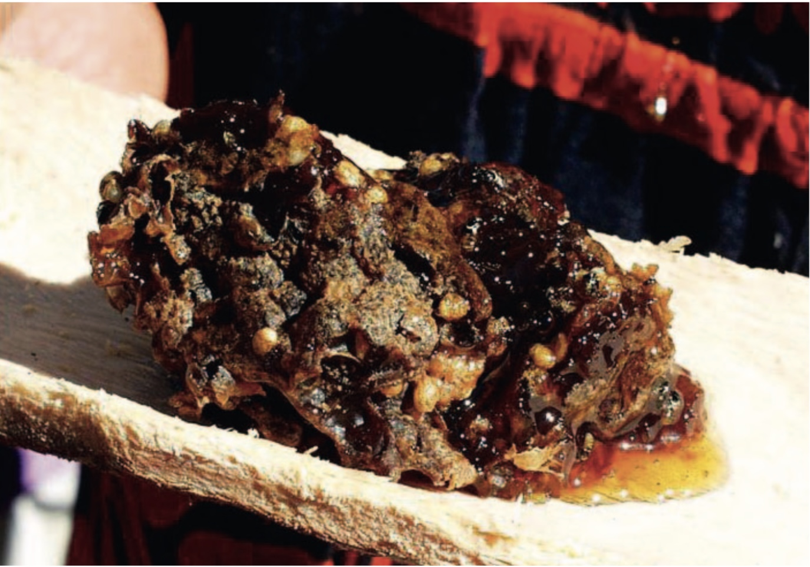

Photographer: Glenn Wightman
Alternate name: namawurru
Sugarbag
No scientific name
Namawurru-ma. Kurru ngulu nyangani kuyangku, ngulu nyangani kankula karrap nama-walija. Paraj ngulu pungani karnti-ka. Tikap na ngulu panani namawurru-ma nyila-ma. Ngulu manani kumpaying purrupurru ngarlu ngulu manani. Yuwanani ngulu parlak.
This is sugarbag. (To get it) people listen for bees or spot them.
That’s how they find sugarbag in trees. Then they chop out the
sugarbag. They get both the honeycomb and the honey
and mix it up. Native bee-hives or 'sugarbag' (in Kriol) contain sweet dark honey that is very tasty and much sought after. The hives also contain wax, pollen and eggs. The small bees have no sting and are harmless. Sugarbag is considered a mild laxative which 'opens up' your stomach. The general terms for sugarbag are 'namawurru' or 'ngarlu' which also refer to the sweet dark honey. The honey is referred to specifically as 'ngunyjung'. Sugarbag occurs in three main areas. One is found in hollows in trees, one occurs in the ground and the other in termite mounds. Ground sugarbag is called 'nangkalij' or 'nangkaliny' or 'yarlukura'. Tree sugarbag is called 'ngarlu' or 'namawurru'. The entrance hole of the hive is called 'jurrkiny' which has a nose or veranda over the hole. The small stingless bee is called 'nama' or 'lanu'. The yellow eggs and pollen in the hive are called 'kuntarri', 'kumpaying' or 'ngunyuwulij'. The wax is called 'jikala', 'piyarnak', or 'tarla'. The separation between the honey and wax, and the pollen is called 'jirnuk'. The honey, wax and pollen all mixed up together is referred to as 'kirrang'. A full hive is called 'ngitiwuny'. The egg of the bee is called 'kurla'. Bee droppings are called 'jayurrk' and are seen below the hive entrance holes on the ground. This signals that the hive is active. The word for sugarbag season is 'tulwarrangkarrakmirntij' (the season of blossoms) and there are specific words for chopping at a tree to get honey, 'pirntirrp' or 'tarlawurlp' and digging into the hole with your fingers and sampling the honey, 'ngampij' or 'ngapinykarra'. A stick or small brush which is used to get honey out of a tree that cannot be chopped open is called a 'jamawurn'.
Speaker: Violet Wadrill